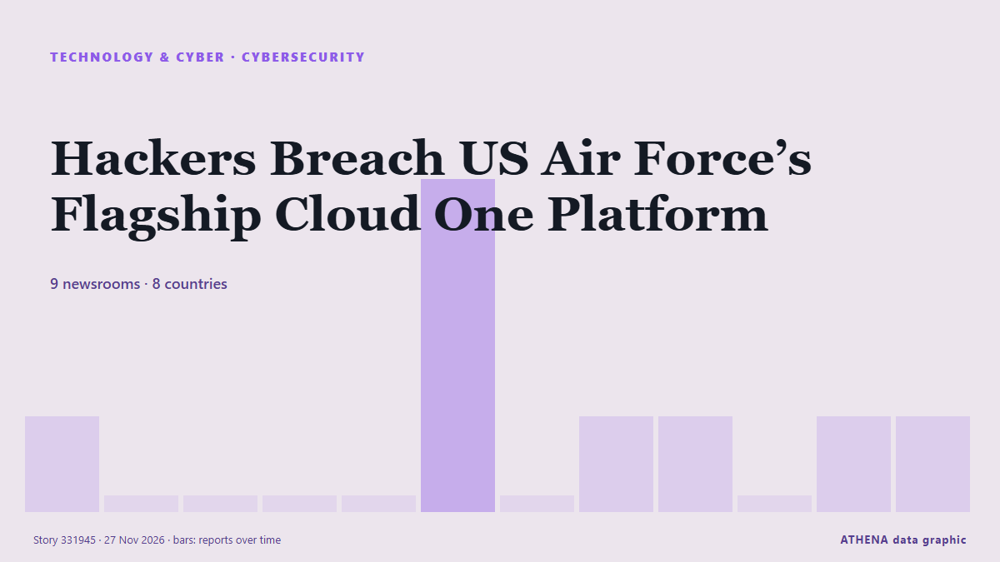

Τεχνολογία, ΤΝ & Κυβερνοασφάλεια
ΧορηγούμενοΠαρουσιάζεται από  Cybernetics and Artificial Intelligence Lab Welcome to the Cybernetics and Artificial Intelligence Laboratory, established at the Department of Business Administration of the National and Kapodistrian University of Athens. The lab is headed by Professor Dimitrios Thomakos. The lab aims to do research that can be published in top venues. Our research uses tools and methods of Artificial Intelligence, and lies in the following areas: - Forecasting - Decision making - Cyber security - Finance We are always looking forward to collaborating with exceptional students!
Cybernetics and Artificial Intelligence Lab Welcome to the Cybernetics and Artificial Intelligence Laboratory, established at the Department of Business Administration of the National and Kapodistrian University of Athens. The lab is headed by Professor Dimitrios Thomakos. The lab aims to do research that can be published in top venues. Our research uses tools and methods of Artificial Intelligence, and lies in the following areas: - Forecasting - Decision making - Cyber security - Finance We are always looking forward to collaborating with exceptional students!
Οι τίτλοι των ειδήσεων παρουσιάζονται στα αγγλικά, όπως δημοσιεύτηκαν.

ΚυβερνοασφάλειαHackers Breach US Air Force’s Flagship Cloud One Platform
The intrusion could expose sensitive tactical, personnel and logistics data, prompting a Cyber Command damage assessment, sources tell Reuters. από to vima
| 14 Νοε | 40 |
|---|---|
| 15 Νοε | 44 |
| 16 Νοε | 119 |
| 17 Νοε | 105 |
| 18 Νοε | 105 |
| 19 Νοε | 105 |
| 20 Νοε | 65 |
| 21 Νοε | 30 |
| 22 Νοε | 45 |
| 23 Νοε | 90 |
| 24 Νοε | 76 |
| 25 Νοε | 78 |
| 26 Νοε | 52 |
| 27 Νοε | 18 |
Bitcoin price drops below $59K as Anthropic joins tech stock rebound
Bitcoin price volatility returned at the Wall Street open as BTC/USD dropped to local lows of $58,700 while stocks and gold headed higher. από Cointelegraph
French far-right leader Bardella faces fresh anti-Semitism accusations in media reports
French far-right leader Jordan Bardella faced fresh accusations of past antisemitic remarks on Thursday, as French media published an additional trove of comments purportedly made in chats from… από France 24 English
UK benefits department hit by cyber incident, takes services offline
The UK’s Department for Work and Pensions has taken some of its online services offline after detecting a cyber incident. από The Next Web
U.S. approves SpaceX plan to deploy 1 million satellites for data centres in space
The Federal Communications Commission (FCC) is authorizing Elon Musk's SpaceX to deploy a constellation of one million satellites for data centres in space, the agency said on Wednesday. από CBC News (alternative feed)
Global news agency AFP reports cyberattack, shuts down content platform
France's cybersecurity chief urges collective action to combat unprecedented threat levels in the nation. από Al Jazeera English
Fifa confirms internal data stolen in cyber attack
A person with direct knowledge of the matter told Reuters that no files from the abandoned FIFA Forward Enterprise project were accessed. από Citizen Digital
X finally gets parental controls after 20 years
Elon Musk's social network X has finally added parental controls for teenagers, giving parents and guardians a way to manage what their kids see on the platform. από TechCrunch
Musk pledges two SpaceX shares for every US child
Elon Musk plans to gift every child in the United States two SpaceX shares, as he attempts to build public support for his satellite and AI businesses during a period of intense pu... από Oman Observer
For China, genocide ruling against Myanmar is a diplomatic dilemma
Beijing is a close strategic partner and has substantial economic interests in the Rakhine state where the atrocities against the Rohingya ocurred. από Scroll.in
Apple pulls MiniMax AI chatbot from App Store over child safety concerns
Talkie was once biggest revenue driver for Hong Kong-listed MiniMax. από Express Tribune
FIFA says it has been victim of a cyberattack accessing ‘personal and business information’
FIFA was the victim of a cyberattack that saw hackers gain access to what soccer’s world governing body describes as a “limited set of personal and business information," it said Thursday. από CBC News
Butter chicken in space: China prepares halal feast for Pakistan’s first astronaut
Menu features more than 100 varieties of food for Pakistani astronaut Zeeshan Ali, including beef nihari, lamb korma, curried chickpeas and butter chicken. από Anadolu Agency (English)
Five questions over Nvidia's China chip trail that Huang's return has not settled
For Nvidia shareholders, the main risk is regulatory rather than personal. από investingLive (ForexLive)
Trump’s Nvidia Shares Gained Up to $14.8M After Huang’s Return
Nvidia shares jumped 31.48% to US$165.05 on Monday, Nov. από Colombia One
US finds no evidence China directed executive to spy on Nvidia CEO, WSJ reports
U.S. officials found no evidence that tech executive Alice Huang was directed by Beijing to spy on Nvidia CEO Jensen Huang, the Wall Street Journal reported on Wednesday, citing people familiar with… από The Korea Times
Australians eye Black Friday bargains
Black Friday begins today and after weeks of early bird promotions, retailers will be rolling out major bargains. από The Age
Nate Silver predicts Trump ‘absolutely’ could be impeached over Nvidia’s China chip sales
As Nvidia CEO Jensen Huang’s affair scandal unfolded last week, a House committee revealed that the Trump administration approved shipments of nearly 900,000 AI chips to alleged Chinese… από The Independent
NVIDIA reportedly halts AI chip shipments to Southeast Asia
In the same week that NVIDIA reinstated Jensen Huang as its CEO, the company has reportedly also blocked shipments to Southeast Asia. από Engadget
1Password customer data, source code taken in GitHub breach
1Password says customer vault data, the items in them, and the keys that protect them are safe and unaffected as the platform does not have access to user passwords or secret keys. από Rappler
India's main opposition party sues Meta, alleging censorship
NEW DELHI: India’s main opposition party is suing Meta and Prime Minister Narendra Modi’s government for alleged censorship on social media, party officials told AFP on Thursday. από Business Recorder
‘Trapped in grief’: wife of Japanese journalist detained by Russia pleads for his release
Yuki Imai being held in Moscow on allegations he conducted ‘espionage’ while working for a newspaper in Sakhalin island in Russia’s far east The wife of a Japanese journalist who has been detained in… από The Guardian
Nvidia halts server shipments to four South-east Asian countries, including Singapore: Report
It was unclear whether the halt would be temporary. από The Straits Times
Anthropic chief denies wanting humans to 'surrender' free will to AI
Anthropic chief executive Dario Amodei on Wednesday denied wanting humanity to give up its free will to AI, calling it “absurd” to attribute the idea to him as rival tech leaders push back. από Dawn
Pakistan makes history as its first astronaut reaches space
A historic moment for Pakistan as Muhammad Zeeshan Ali reaches China's Tiangong space station, becoming the country’s first astronaut in orbit and the first foreign astronaut to join a Chinese crewed… από TRT World
AI tools help brands curb Black Friday deals, from clothes to skincare
Often, the tools conclude that companies can reduce discounts without dampening demand,. από The Straits Times
Palestinian detainees starved, neglected in Israeli jails
Palestinian detainees at Israel’s Ofer Prison have lost dozens of kilograms amid food deprivation, medical neglect and mistreatment, according to a Palestinian prisoners’ affairs body. από TRT World
Nasa's asteroid crash test left stadium-sized crater; first images reveal
Images from the ESA's Hera spacecraft show the aftermath of NASA's successful impact on asteroid Dimorphos. από Times of India
Treasury's FinCEN takes systems offline after cybersecurity incident
The Treasury Department has taken some systems offline after a cybersecurity incident that “resulted in unauthorized access to a limited subset of its systems.” από The Record (Recorded Future News)
European Commission Proposes Quantum Act and New Sovereign Tech Equity Fund
Insider Brief PRESS RELEASE — The European Commission today proposed the Quantum Act, a new framework to help turn Europe’s quantum research into products and services, strengthen supply chains and… από The Quantum Insider
Hong Kong mobile carrier restores services after widespread network outage
SmarTone apologizes to customers after disruption to phone calls, mobile internet services across several districts. από Anadolu Agency (English)
Belgium inaugurates Europe’s largest satellite factory
Belgium’s King Philippe on Tuesday, Nov. από Kyiv Post
China's Shenzhou-24 docks with Tiangong, welcomes Pakistani astronaut
China rocket blasts off on Shenzhou-24 mission: state media. από Gulf News
Islamic State attack kills two Syrian security personnel in Hasaka, state media says
Nov 25 - An Islamic State attack killed two Syrian internal security personnel and wounded five others in the northeastern city of Hasaka, Syrian state television reported on Wednesday. από The Straits Times
US officials divided over Chinese spying allegations following Jensen Huang's return
Days after President Donald Trump declared Nvidia CEO Jensen Huang was not a security threat to the United States, a central question remains unanswered: was the woman Huang was having an affair… από Business Recorder